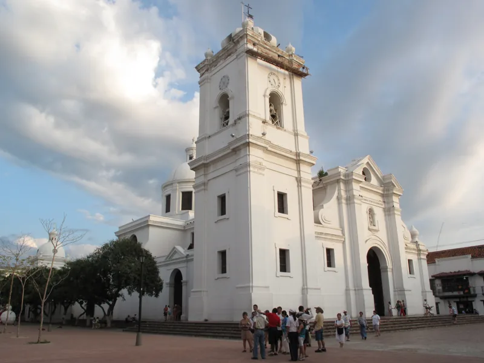
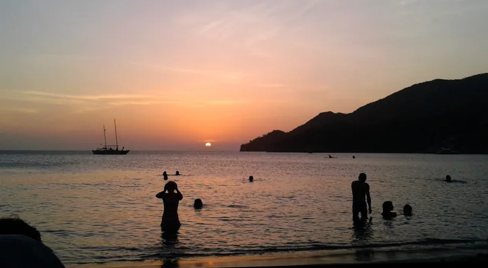
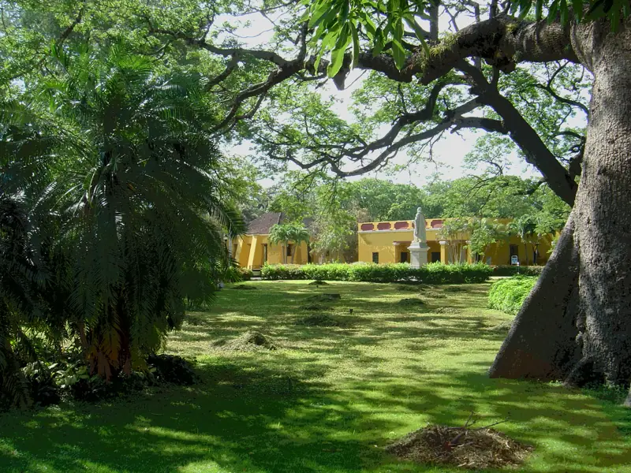

Borrador privado · textos, imágenes y traducciones pendientes de aprobación. No publicado.
Ver corrección de alcance y actividades · Galería anterior pendiente de redistribuir por componente.

Lombana / Wikimedia Commons / CC BY-SA 3.0 · Licencia · Original y procedencia Derivado redimensionado, sin recorte; conserva compartir igual.
Tisquesusa / Wikimedia Commons / CC BY-SA 4.0 · Licencia · Original y procedencia Derivado redimensionado, sin recorte; conserva compartir igual.
Santy cardenas / Wikimedia Commons / CC BY-SA 4.0 · Licencia · Original y procedencia Derivado redimensionado, sin recorte; conserva compartir igual.Santa Marta: historia, bahía y puertas a la Sierra
Un destino para combinar ciudad y naturaleza
Santa Marta, en Magdalena, reúne centro histórico, espacios culturales y sectores costeros con paisajes diferentes. Conviene organizar las visitas por zonas: recorrer la ciudad no equivale a haber conocido la Sierra Nevada o sus áreas protegidas. Minca conserva una ficha relacionada propia; no se duplicará su contenido como si fuera otro municipio. [territorio, playas]
Historia y memoria
La arquitectura del centro permite acercarse a la memoria colonial de la ciudad. La Catedral y la Casa de la Aduana son referencias para un recorrido cultural que puede complementarse con el Museo del Oro Tairona. Las colecciones del museo ayudan a interpretar el patrimonio regional sin reducir las comunidades indígenas a una imagen del pasado. [territorio, museo]
La Quinta de San Pedro Alejandrino conserva una dimensión distinta de esa memoria: allí murió Simón Bolívar el 17 de diciembre de 1830. El conjunto combina la casa histórica, espacios museales y un jardín botánico. La fotografía de la Quinta se reutiliza en historia y atractivo porque representa el mismo sitio; no acredita su estado actual. [quinta, bolivar]
Tres sitios de interés
- **Catedral:** referencia arquitectónica del centro histórico. Fotografía histórica de Lombana, CC BY-SA 3.0; la imagen no garantiza acceso interior. [territorio]
- **Quinta de San Pedro Alejandrino:** acercamiento a la memoria bolivariana y al paisaje de bosque seco del jardín. Confirmar condiciones de visita directamente. [quinta]
- **Taganga:** sector costero del distrito, distinto de El Rodadero. La fotografía muestra un atardecer en Taganga; no se presenta como una vista de la bahía central. [playas]
Experiencias e información práctica
Puede proponerse un recorrido cultural por el centro y los museos, sujeto a horarios confirmados. La oferta de excursiones regionales de Expotur es información comercial de su propio sitio, no recomendación, alianza ni prueba de permisos verificados. [museo, negocios]
**Aviso fechado:** Parques Nacionales anunció cierre de Tayrona del 19 de octubre al 2 de noviembre de 2026 y reapertura prevista el 3 de noviembre. No ofrecer excursiones al parque durante ese cierre. Antes de viajar, revisar el comunicado vigente y confirmar transporte, accesos, restricciones y condiciones con la autoridad y el prestador. [tayrona]
No se publican precios, disponibilidad, rutas garantizadas, tiempos de traslado ni horarios sin revisión. Las fichas del directorio son descubrimiento gratuito con fuente, no negocios inscritos o verificados. Contactos de privacidad y corrección, integración, traducciones e imágenes requieren aprobación antes de publicar.
Santa Marta: history, the bay and gateways to the Sierra
City and nature
Santa Marta, in Magdalena, brings together a historic centre, cultural venues and coastal areas with different landscapes. Plan visits by area: seeing the city does not mean having explored the Sierra Nevada or its protected areas. Minca remains a related destination with its own record, rather than a separate municipality. [territorio, playas]
History and memory
The historic centre offers an introduction to the city's colonial heritage. The Cathedral and the Customs House are cultural landmarks, complemented by the Tairona Gold Museum. Its collections help explain regional heritage without portraying Indigenous communities only as figures from the past. [territorio, museo]
The Quinta de San Pedro Alejandrino preserves another part of this history: Simón Bolívar died there on 17 December 1830. The site combines the historic house, museum spaces and a botanical garden. The same historical photograph is used for the history section and the attraction because both describe this location; it does not document current conditions. [quinta, bolivar]
Three places of interest
- **Cathedral:** a historic-centre architectural landmark. Historical photograph by Lombana, CC BY-SA 3.0; interior access is not guaranteed. [territorio]
- **Quinta de San Pedro Alejandrino:** Bolívar's memory and the garden's dry-forest landscape. Confirm visitor arrangements directly. [quinta]
- **Taganga:** a coastal part of the district, distinct from El Rodadero. Its sunset photograph is not labelled as the central city bay. [playas]
Experiences and planning
A cultural walk through the centre and museums is a possible visit, subject to confirmed opening arrangements. Expotur's regional excursion offer comes from its own business website; this is neither an endorsement nor verified evidence of permits. [museo, negocios]
**Dated notice:** National Parks announced Tayrona's closure from 19 October to 2 November 2026, with reopening planned for 3 November. Do not offer park excursions during this closure. Check current official notices and confirm transport, access and restrictions before travelling. [tayrona]
Prices, availability, guaranteed routes, travel times and unreviewed opening hours are omitted. Free directory records identify publicly sourced businesses, not registered partners. Privacy/correction channels, integration, translations and images still require approval before publication.
Santa Marta: história, baía e portas para a Sierra
Cidade e natureza
Santa Marta, em Magdalena, reúne centro histórico, espaços culturais e áreas costeiras com paisagens diferentes. Organize a visita por áreas: conhecer a cidade não significa ter explorado a Sierra Nevada ou suas áreas protegidas. Minca permanece como destino relacionado com ficha própria, sem ser apresentado como outro município. [territorio, playas]
História e memória
A arquitetura do centro permite conhecer a memória colonial da cidade. A Catedral e a Casa da Aduana são referências culturais que podem ser complementadas pelo Museu do Ouro Tairona. Suas coleções ajudam a interpretar o patrimônio regional sem apresentar as comunidades indígenas apenas como figuras do passado. [territorio, museo]
A Quinta de San Pedro Alejandrino conserva outra dimensão dessa história: Simón Bolívar morreu ali em 17 de dezembro de 1830. O conjunto reúne a casa histórica, espaços museológicos e um jardim botânico. A mesma fotografia histórica aparece na história e no atrativo porque representa o mesmo local; não comprova suas condições atuais. [quinta, bolivar]
Três locais de interesse
- **Catedral:** referência arquitetônica do centro histórico. Fotografia histórica de Lombana, CC BY-SA 3.0; o acesso ao interior não está garantido. [territorio]
- **Quinta de San Pedro Alejandrino:** memória bolivariana e paisagem de floresta seca do jardim. Confirme diretamente as condições de visita. [quinta]
- **Taganga:** área costeira do distrito, diferente de El Rodadero. A fotografia mostra o pôr do sol em Taganga, não a baía central da cidade. [playas]
Experiências e planejamento
Um percurso cultural pelo centro e pelos museus é uma possibilidade, sujeito a horários confirmados. A oferta de excursões regionais da Expotur vem do próprio site comercial; não é recomendação, parceria ou comprovação de permissões verificadas. [museo, negocios]
**Aviso datado:** Parques Nacionais anunciou o fechamento de Tayrona de 19 de outubro a 2 de novembro de 2026, com reabertura prevista para 3 de novembro. Não oferecer excursões ao parque durante esse período. Antes de viajar, consulte os avisos oficiais e confirme transporte, acessos e restrições. [tayrona]
Preços, disponibilidade, rotas garantidas, tempos de viagem e horários sem revisão foram omitidos. O diretório gratuito reúne negócios com fontes públicas, não parceiros inscritos. Canais de privacidade/correção, integração, traduções e imagens precisam de aprovação antes de publicar.
Revisión reabierta: alcance del destino
La galería anterior era insuficiente. Este inventario amplía la investigación; faltan fotografías, traducciones y fichas completas. No se solicita aprobar estos faltantes.
Centro histórico
patrimonio · urbano
Recorrido cultural; delimitar calles y paradas.
Texto: investigacion_ampliada_pendiente_traducciones · Foto: pendiente
Fuente consultadaEstado: pendiente. No presentado como componente completo para aprobar.
Catedral
arquitectura · urbano
Foto histórica disponible; revisión pendiente.
Texto: investigacion_ampliada_pendiente_traducciones · Foto: referencia_disponible_pendiente_aprobacion
Fuente consultadaEstado: pendiente. No presentado como componente completo para aprobar.
Museo del Oro Tairona / Casa de la Aduana
museo · urbano
Completar ficha específica y fotografía autorizada.
Texto: investigacion_ampliada_pendiente_traducciones · Foto: pendiente
Fuente consultadaEstado: pendiente. No presentado como componente completo para aprobar.
Taganga
costa · distrito
Foto disponible; separar visita a bahía de actividad de buceo.
Texto: investigacion_ampliada_pendiente_traducciones · Foto: referencia_disponible_pendiente_aprobacion
Fuente consultadaEstado: pendiente. No presentado como componente completo para aprobar.
Gayraca
naturaleza · Parque Tayrona
Confirmar reglas actuales de parque y acceso; no reutilizar precios de 2023.
Texto: investigacion_ampliada_pendiente_traducciones · Foto: pendiente
Fuente consultadaEstado: pendiente. No presentado como componente completo para aprobar.
Bunkuany
patrimonio · excursión regional por delimitar
Validar jurisdicción, permisos y visita respetuosa antes de integrar.
Texto: investigacion_ampliada_pendiente_traducciones · Foto: pendiente
Fuente consultadaEstado: pendiente. No presentado como componente completo para aprobar.
Cerro Kennedy
naturaleza · Sierra Nevada, excursión por delimitar
Validar acceso y operador; no ofrecer senderos privados sin permiso.
Texto: investigacion_ampliada_pendiente_traducciones · Foto: pendiente
Fuente consultadaEstado: pendiente. No presentado como componente completo para aprobar.
Minca
naturaleza · corregimiento / ficha relacionada
Relacionar ficha propia y evitar doble conteo.
Texto: investigacion_ampliada_pendiente_traducciones · Foto: pendiente
Fuente consultadaEstado: pendiente. No presentado como componente completo para aprobar.
Termales de Ciénaga
naturaleza · otro municipio: Ciénaga
Fuera de inventario municipal; solo enlace regional, sin afirmaciones terapéuticas.
Texto: investigacion_ampliada_pendiente_traducciones · Foto: pendiente
Fuente consultadaEstado: pendiente. No presentado como componente completo para aprobar.
Quinta de San Pedro Alejandrino
historia · distrito
Ficha previa y fotografía en entrega; revisión pendiente.
Texto: borrador · Foto: referencia_disponible_pendiente_aprobacion
Fuente consultadaEstado: pendiente. No presentado como componente completo para aprobar.
Actividad con operador: buceo desde Taganga
Oferta documentada en el sitio de Barracuda Dive Center; sin alianza, permisos, cupos o vigencia operativa verificados. Fotografía autorizada de la actividad pendiente.
Fuente del operadorPrimero se aprueban originales, usos y textos; después se generan ilustraciones con el skill existente y se revisan por separado. No hay generación ni publicación autorizada de esta versión.